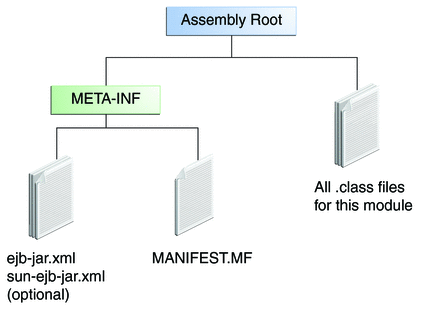

The Contents of an Enterprise Bean
To develop an enterprise bean, you must provide the following files:
Enterprise bean class: Implements the business methods of the enterprise bean and any life cycle callback methods.
Business Interfaces: The business interface defines the business methods implemented by the enterprise bean class. A business interface is not required if the enterprise bean exposes a local, no-interface view.
Helper classes: Other classes needed by the enterprise bean class, such as exception and utility classes.
Package the programming artifacts in the preceding list into either an EJB JAR file (a standalone module that stores the enterprise bean), or within a web application archive (WAR) module.
Packaging Enterprise Beans In EJB JAR Modules
An EJB JAR file is portable and can be used for different applications.
To assemble a Java EE application, package one or more modules (such as EJB JAR files) into an EAR file, the archive file that holds the application. When deploying the EAR file that contains the enterprise bean’s EJB JAR file, you also deploy the enterprise bean to the GlassFish Server. You can also deploy an EJB JAR that is not contained in an EAR file. Figure 14-2 shows the contents of an EJB JAR file.
Figure 14-2 Structure of an Enterprise Bean JAR
Packaging Enterprise Beans in WAR Modules
Enterprise beans often provide the business logic of a web application. In these cases, packaging the enterprise bean within the web application's WAR module simplifies deployment and application organization. Enterprise beans may be packaged within a WAR module as Java programming language class files or within a JAR file that is bundled within the WAR module.
To include enterprise bean class files in a WAR module, the class files should be in the WEB-INF/classes directory.
To include a JAR file that contains enterprise beans in a WAR module, add the JAR to the WEB-INF/lib directory of the WAR module.
WAR modules that contain enterprise beans do not require an ejb-jar.xml deployment descriptor. If the application uses ejb-jar.xml, it must be located in the WAR module's WEB-INF directory.
JAR files that contain enterprise bean classes packaged within a WAR module are not considered EJB JAR files, even if the bundled JAR file conforms to the format of an EJB JAR file. The enterprise beans contained within the JAR file are semantically equivalent to enterprise beans located in the WAR module's WEB-INF/classes directory, and the environment namespace of all the enterprise beans are scoped to the WAR module.
Example 14-8 Enterprise Beans Packaged In A WAR Module
Suppose a web application consisted of a shopping cart enterprise bean, a credit card processing enterprise bean, and a Java servlet front-end. The shopping cart bean exposes a local, no-interface view and is defined as follows:
package com.example.cart;
@Stateless
public class CartBean { ... }The credit card processing bean is packaged within its own JAR file, cc.jar. It exposes a local, no-interface view and is defined as follows:
package com.example.cc;
@Stateless
public class CreditCardBean { ... }The servlet, com.example.web.StoreServlet handles the web front-end and uses both CartBean and CreditCardBean. The WAR module layout for this application looks as follows:
WEB-INF/classes/com/example/cart/CartBean.class WEB-INF/classes/com/example/web/StoreServlet WEB-INF/lib/cc.jar WEB-INF/ejb-jar.xml WEB-INF/web.xml